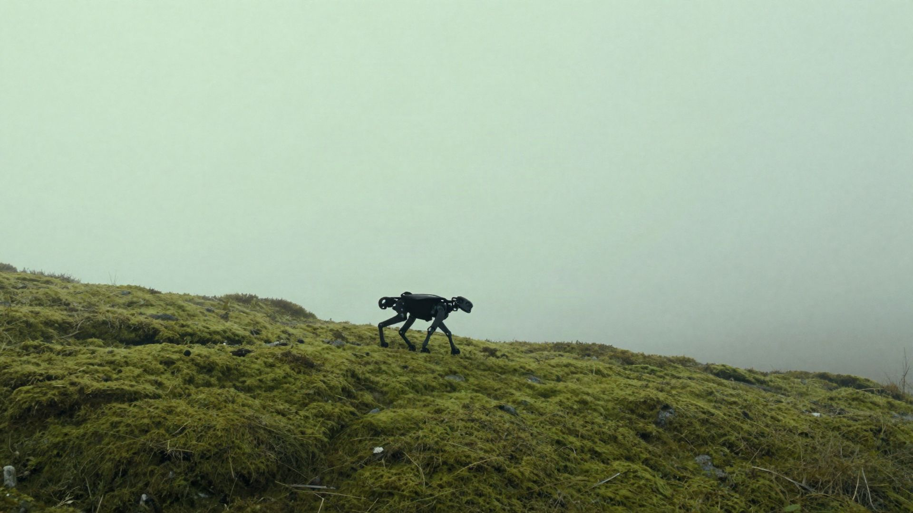

Engineering report
Failures clustered by mode rather than listed by count, with the region of parameter space each cluster occupies, the minimal reproducing case for every one, and trajectory traces and video for each flagged run.
Adversarial testing for learned robot policies
A robot trained in simulation walks beautifully until the moss is wet, the slope is steeper, or a sensor answers late. We hunt those conditions on purpose — thousands of them — so the first failure happens in simulation, not in a warehouse.
Learned controllers fail on conditions nobody wrote a test for: a friction coefficient outside the training distribution, a payload two centimetres off centre, a depth sensor that answers late under load. The failures are rarely exotic. They are ordinary conditions that were never sampled.
And the usual tools don't transfer. There is no branch to cover and no line to instrument, so coverage means nothing here. Passing a hundred scripted scenarios tells you about a hundred scenarios — it says nothing about the hundred and first.
Why now
20 January 2027
Regulation (EU) 2023/1230, Annex I Part A
EU Machinery Regulation 2023/1230 replaces the Machinery Directive on that date — directly and identically in every member state. Machinery with fully or partially self-evolving behaviour falls under Annex I Part A, so a notified body must be involved even for a manufacturer following every harmonised standard.
And the delegated act defining what counts as adequate evidence isn’t due until 2028. Assessment becomes mandatory roughly eighteen months before anyone agrees what passing looks like.
The question is where this policy fails. Every stage exists to answer it with something a stranger can re-run.
Your policy checkpoint and robot model, loaded into deterministic simulation. Seed, simulator version and policy hash are recorded with every run.
Each test is one point in the parameter space you declared — a specific friction, slope, latency, payload and disturbance, applied together.
Random sampling covers the volume and finds the obvious failures. A trained adversary concentrates its budget where violations are dense, and finds the ones nobody thought to try.
Each trajectory is checked against your predicates. A run is flagged only when a rule you wrote evaluates true.
Every flagged run is minimised — perturbations are relaxed until the failure disappears — so what you get is the smallest condition that still breaks the policy.
robot: quadruped_12dof.urdf
policy: ckpt/policy_ppo_41200.pt
sim: mujoco==3.1.6
seed: 0xA13F
budget: 40000
axes:
push_impulse: [0, 40] # N·s
friction_mu: [0.25, 1.10]
slope_deg: [0, 25]
sensor_lag_ms: [0, 80]
predicates:
- tilt_deg > 35
- contact_force_n > 900
- com_outside: support_polygon
search: directed # or: random
reduce: true # minimise every failing case
Every field is yours. The seed and the simulator version are what make a run re-runnable a year later.
You declare the axes and their bounds. We search the volume they enclose. These are the axes supported today; the numbers below are illustrative defaults for a mid-size quadruped, and yours replace them.
| Axis | Unit | Illustrative range |
|---|---|---|
| Push impulse | N·s | 0 – 40 |
| Ground friction µ | — | 0.25 – 1.10 |
| Slope | deg | 0 – 25 |
| Terrain roughness | cm RMS | 0 – 6 |
| Sensor latency | ms | 0 – 80 |
| Actuator torque loss | % | 0 – 30 |
| Payload mass | kg | 0 – 8 |
| Payload offset | cm | 0 – 15 |
Axes combine. The interesting failures are almost never on one axis alone.
Every violation is an explicit predicate over the trajectory. No learned classifier sits between the run and the verdict — when a run is flagged you can read the line that flagged it, and disagree with it.
Forms supported today. The thresholds are yours.

Hardware validation
A simulated failure is a hypothesis until the robot reproduces it.
Currently in progress against a quadruped policy trained with PPO. No results to show yet.
A campaign against the stand-in quadruped — its failure modes, sample efficiency and coverage — is published in full. See a sample report →
Failures clustered by mode rather than listed by count, with the region of parameter space each cluster occupies, the minimal reproducing case for every one, and trajectory traces and video for each flagged run.
Method, the declared parameter space and what was covered of it, every predicate definition, and the full run manifest. Written to be read by someone assessing the evidence rather than someone who built it.
Seeds, simulator version, policy hash, and the exact configuration for every run in the campaign. Any result in either document can be reproduced bit for bit, by you or by an assessor.
Simulators
MuJoCo, Isaac Sim
Robot models
URDF, MJCF
Policies
PyTorch checkpoints, ONNX
Predicates
YAML, or Python for anything the schema can’t express
Output
PDF, ROS 2 bags, trajectory CSV, MP4 per flagged run
Execution
Your infrastructure or ours; runs are containerised either way
To start
If you already have a simulation environment, we work inside it rather than replacing it.
A testing company that overstates its evidence is worse than no testing company. So, plainly:
In progress
Not yet
Talk to us
Not a demo request. We’re trying to understand what evidence teams actually need before January 2027 — and if you already know, that’s worth more to us than a signup.
Start a conversation